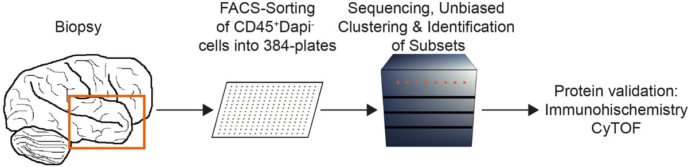

Mapping microglia states in the human brain through the integration of high-dimensional techniques
Nature Neuroscience · 2019 · doi:10.1038/s41593-019-0532-y
3 datasets, 8,106 cells in total.

1,705 microglia from age-matched control and glioblastoma brain, clustered with RaceID3.
import anndata as ad
adata = ad.read_zarr("https://freburg-immune-data-viewer-544227292049-us-east-1-an.s3.us-east-1.amazonaws.com/sankowski_et_al_2019__20181213_age_matched_healthy_vs_gbm_human_microglia_only_no_bcells_sc_raceid3.zarr")Single-gene fetch measured locally: p50 0.3 ms, p95 0.3 ms · X chunked [1705, 10]
4,402 microglia from 15 donors across grey and white matter, B cells removed, clustered with RaceID3; the authors' cluster palette is preserved.
import anndata as ad
adata = ad.read_zarr("https://freburg-immune-data-viewer-544227292049-us-east-1-an.s3.us-east-1.amazonaws.com/sankowski_et_al_2019__20181212_healthy_human_micr_no_bcells_cl14_fused_sc_raceid3.zarr")Single-gene fetch measured locally: p50 0.5 ms, p95 0.9 ms · X chunked [4402, 10]
1,999 microglia from the initial donor cohort, grey and white matter, clustered with RaceID3.
import anndata as ad
adata = ad.read_zarr("https://freburg-immune-data-viewer-544227292049-us-east-1-an.s3.us-east-1.amazonaws.com/sankowski_et_al_2019__20171203_healthy_human_microglia_sc_raceid3.zarr")Single-gene fetch measured locally: p50 0.3 ms, p95 0.4 ms · X chunked [1999, 10]